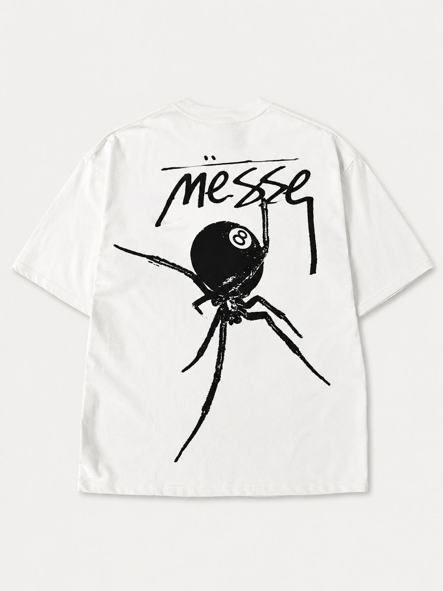
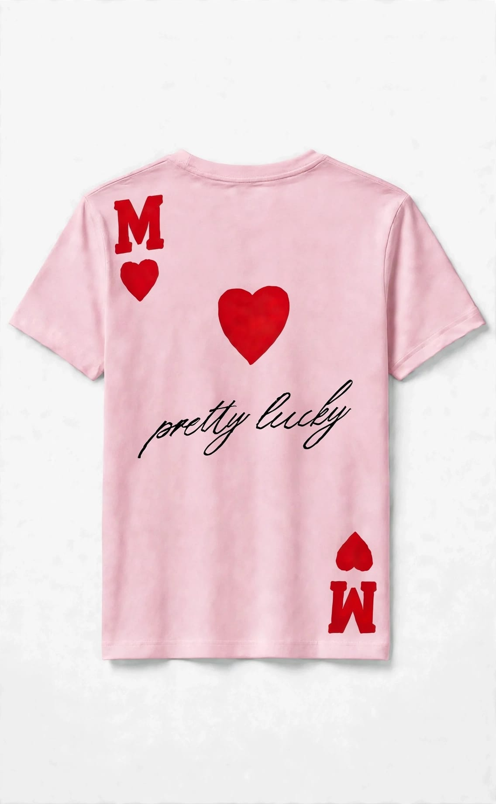
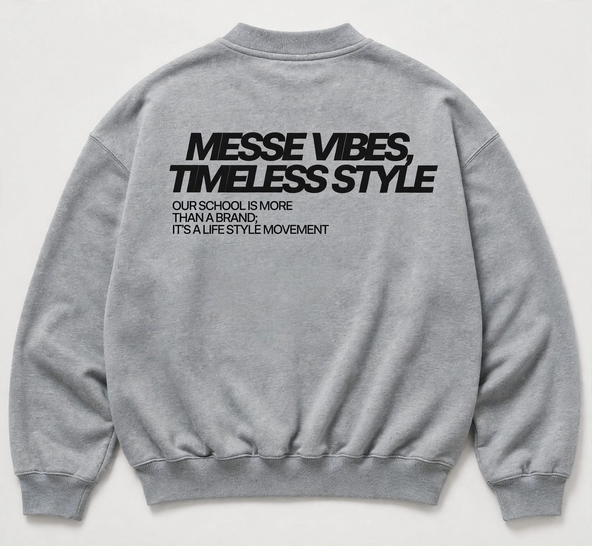
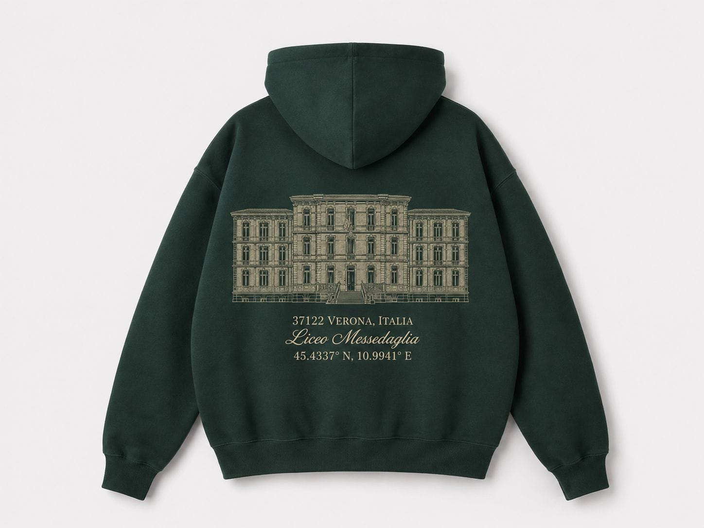
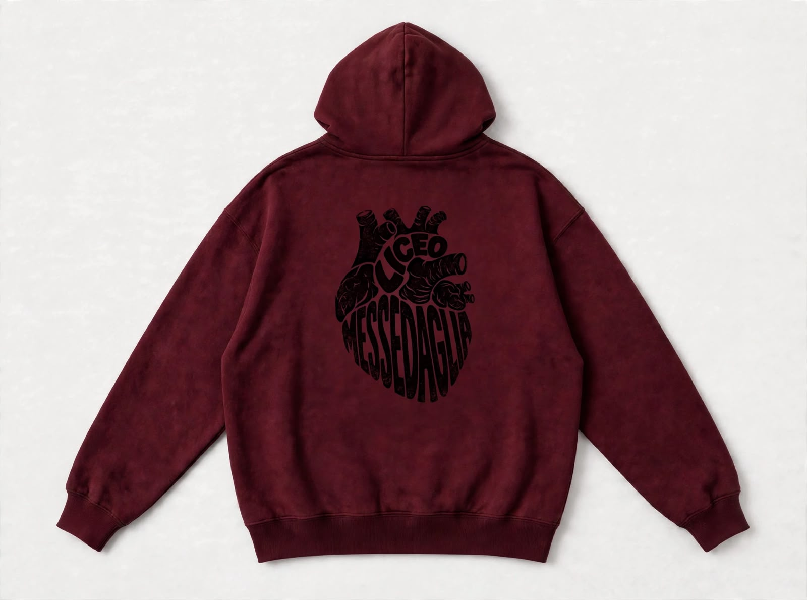

Anteprima 01 / 05
Il ragno Messe
Una grafica decisa, con il nome della scuola e il ragno sul retro.
Colore: Bianco
Project List / Merch
Grafiche per sentirsi parte della scuola, anche fuori dalle sue mura. Esplora i design e scegli il colore che ti somiglia.
Queste immagini sono anteprime dei design. Prezzi, disponibilità e modalità d'ordine saranno comunicati in seguito.
01 / Le grafiche
Due idee, otto modi di indossarle.

Anteprima 01 / 05
Una grafica decisa, con il nome della scuola e il ragno sul retro.
Colore: Bianco

Anteprima 02 / 05
Cuori, lettering e un tocco più giocoso.
Colore: Rosa
02 / Stile quotidiano
Un messaggio da portare anche fuori da scuola.

Anteprima 03 / 05
La grafica “Messe Vibes, Timeless Style” in quattro varianti.
Colore: Grigio
03 / Un segno di appartenenza
Due interpretazioni del Messedaglia.

Anteprima 04 / 05
La facciata della scuola diventa una grafica da indossare.
Colore: Verde

Anteprima 05 / 05
Una grafica a forma di cuore per rappresentare la scuola.
Colore: Bordeaux
04 / Più di una collezione
Il merch è solo una parte delle idee che vogliamo realizzare insieme.
Vogliamo collaborare con Digi, portare i campioni a scuola per provarli e aprire uno shop online per gli ordini. Puntiamo a una consegna entro 12 giorni lavorativi.
Vogliamo creare l'annuario con Annuario Scolastico e scegliere le grafiche insieme a voi. L'obiettivo è consegnarlo entro 7 giorni lavorativi.
Abbiamo in mente cappelli e borracce, oltre a maglie e felpe dedicate ai club studenteschi e alla curva del Messe.
Hai un'idea per una grafica? Vogliamo raccogliere le vostre creazioni e scegliere le nuove proposte con un sondaggio aperto a tutta la scuola.
Hai domande sul merch o vuoi proporre una grafica? Leggi le FAQ o scrivici su Instagram.